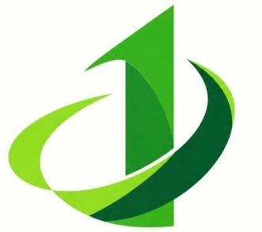
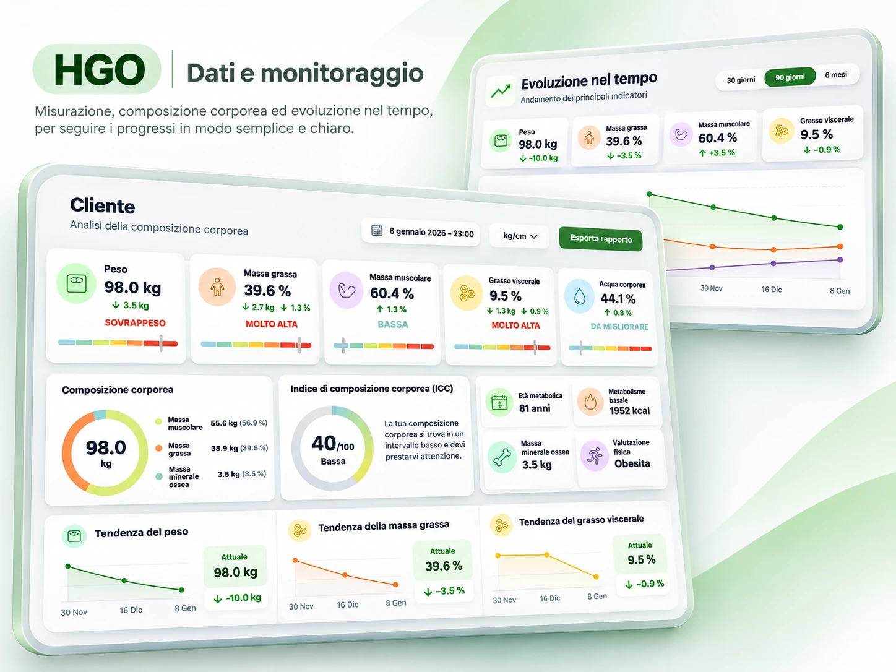
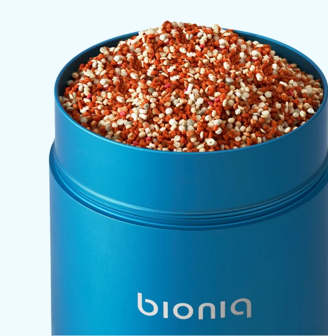

IL TUO REDDITO DIPENDE DALLE ORE CHE LAVORI?
Il tuo tempo è finito. Se la tua attività cresce soltanto quando lavori di più, hai un tetto strutturale.

BE ONE TEAMOPPORTUNITYLA DOMANDA CHE CAMBIA TUTTO
La tua competenza crea valore. Ma se tutto dipende dalle tue ore, dalla tua presenza e dalla tua città, non hai ancora costruito un modello capace di crescere oltre te.

COSA CERCA OGGI IL CLIENTE?
Il cliente non cerca soltanto una soluzione immediata. Vuole un sistema personalizzato, accessibile e sostenibile, che lo accompagni passo dopo passo, gli permetta di misurare i progressi e lo aiuti a mantenere i risultati raggiunti. È per questo che è disposto a investire: non per una singola prestazione, ma per un sistema che risponde concretamente alle sue esigenze e lo segue nel tempo.
Cinque limiti strutturali che possono frenare anche un ottimo professionista.
Il tuo tempo è finito. Se la tua attività cresce soltanto quando lavori di più, hai un tetto strutturale.
Se il mercato termina con la tua presenza fisica, la geografia decide quanto puoi crescere.
Ogni cliente perso significa ricominciare. Senza continuità, devi riconquistare il tuo mercato ogni mese.
Senza dati confrontabili e progressi documentati, la tua professionalità rischia di diventare una promessa.
Se nessun altro può applicarlo, non hai ancora un sistema replicabile. Hai un'attività che dipende soltanto dalla tua presenza.
Questo significa costruire un business scalabile.
Oggi, se vuoi seguire più clienti, spesso devi lavorare più ore. Ma le ore di una giornata sono limitate.
Un sistema organizzato, con strumenti digitali, assistenza continuativa e attività che possono essere svolte anche da altri collaboratori, ti permette di seguire più persone e sviluppare il tuo business senza dover aumentare nella stessa proporzione il tempo che dedichi al lavoro.
Un flusso che non si interrompe alla prima consulenza: ogni fase sostiene la successiva.
Valutazioni e confronti nel tempo rendono il percorso più leggibile e misurabile.
Relazione, assistenza e sviluppo del cliente anche a distanza.
Servizi, monitoraggio, community e nuove esigenze alimentano la continuità.
Formazione, procedure e persone permettono alla struttura di crescere oltre il lavoro individuale.
Ogni strumento risolve un limite: dati, personalizzazione, distanza, continuità e sviluppo del mercato.
Valutazioni oggettive, grafici e confronti nel tempo. Il percorso diventa misurabile anche a distanza.
VALUTAZIONE · CONFRONTO · CONTINUITÀ
 DATA-DRIVEN
DATA-DRIVENTecnologia e dati organizzano un percorso personalizzato. Un riferimento continuativo, anche oltre la singola consulenza.
AI · PERSONALIZZAZIONE · ECOSISTEMADati individuali, abitudini e obiettivi guidano la selezione della formula Bioniq GO. Un approccio che distingue la proposta.
VALUTAZIONE · FORMULE SELEZIONATE · ROUTINE

Pasti, ricette, lista della spesa e assistenza. Il metodo entra nella quotidianità e mantiene attiva la relazione.
PIANIFICAZIONE · APP · ASSISTENZAAcquisizione, comunicazione e relazioni: strumenti per espandere il mercato anche oltre il territorio.
Formazione, procedure e affiancamento trasformano la competenza individuale in un processo replicabile.
Accanto alla nutrizione interna, sviluppiamo anche il mercato della cura della pelle: nuovi clienti e nuove opportunità di business.
![Prodotti per la cura della pelle della linea skincare Made in Korea]()
Partecipazione del 10% nella società che detiene la tecnologia Pro2col.
Comunicato ufficiale ↗Un secondo investimento nel settore della micronutrizione personalizzata.
Approfondisci ↗Lo studio di Target Research ha analizzato sostenibilità sociale e dinamiche di collaborazione del modello organizzativo.
Leggi la pubblicazione ↗RICERCA SUL MODELLO ORGANIZZATIVO · INVESTIMENTI TECNOLOGICI · PERSONALIZZAZIONE
Ogni persona porta competenze, esperienza e ambizioni diverse. BE ONE TEAM nasce per valorizzarle.
Entri in un'organizzazione già avviata, con esperienza, risultati concreti, formazione, strumenti e una squadra pronta a supportarti.
Sei tu a scegliere il percorso: puoi sviluppare l'attività part-time, con flessibilità e senza rinunciare al tuo lavoro, oppure costruire progressivamente un progetto professionale.
Il tuo punto di partenza, i tuoi tempi, i tuoi obiettivi. Con la forza di un team al tuo fianco.
Be One Team · Collaboratore
Hai domande sul progetto? Parla direttamente con la persona che te lo ha presentato.
Integra servizi, strumenti e un sistema di relazione con i clienti per ampliare la tua proposta e il tuo mercato.
Costruisci progressivamente competenze e clienti, affiancando il progetto ai tuoi impegni attuali.
Lavora su un modello strutturato, forma persone e sviluppa progressivamente una tua organizzazione commerciale.
Se ti sei riconosciuto in una di queste domande, vale la pena confrontarsi. Non per ascoltare una presentazione generica: per capire se questo modello può avere senso per i tuoi obiettivi.
Be One Team · Collaboratore
349 476 2908
Referente non configurato. Richiedi il link corretto alla persona che ti ha presentato il progetto.